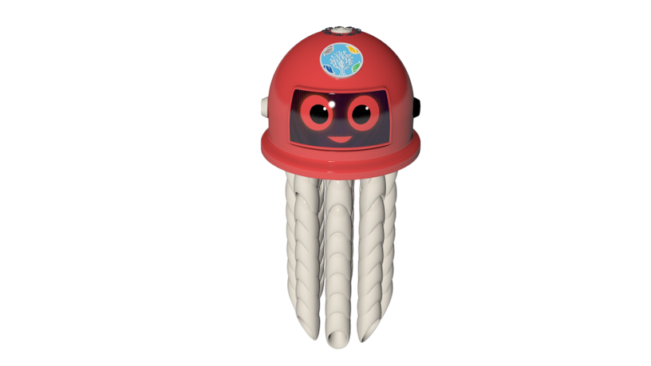
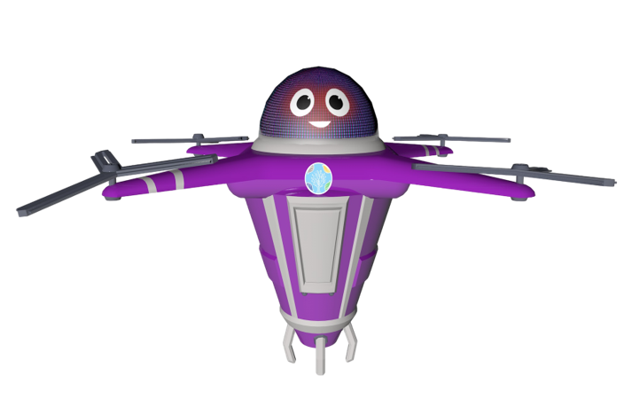
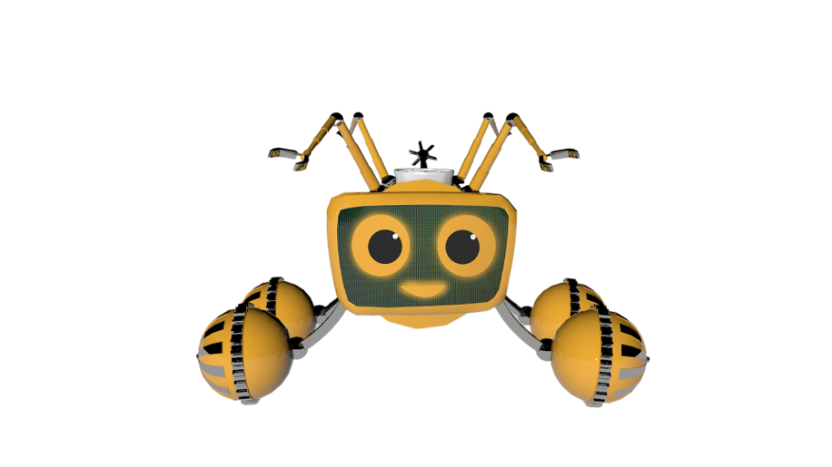
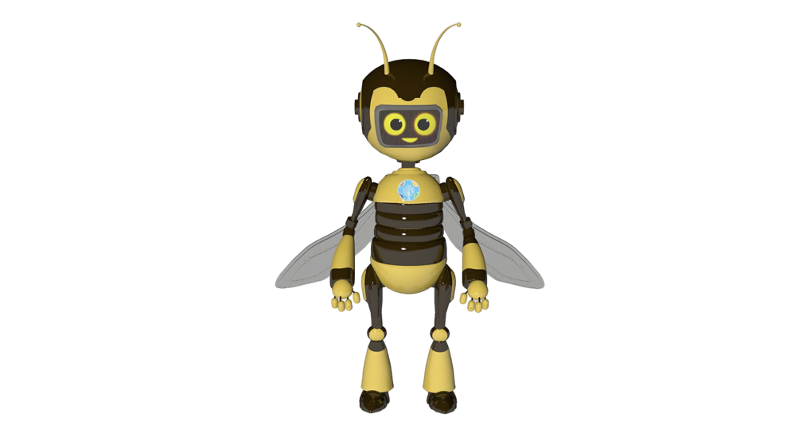
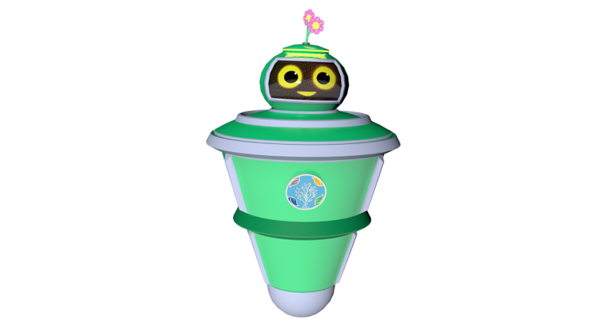
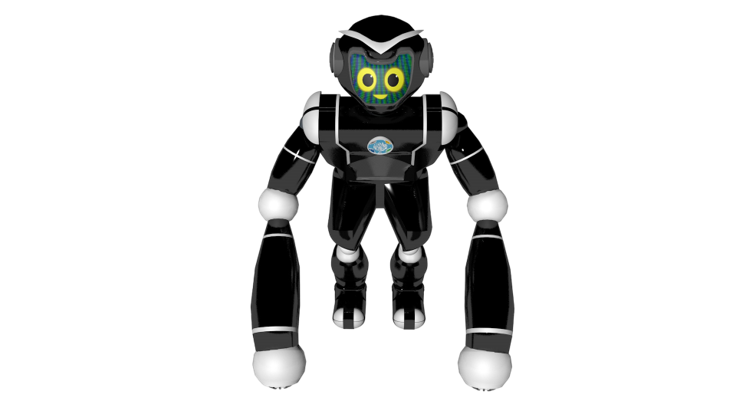

Çevreci Robotlar
Geleceğin çevreci kahramanları
Geleceğin çevreci kahramanları
Tüm karakterlerimiz gelişim sürecinde olmakla beraber fiziksel form olarak tamamlanmış durumda ancak sürece bağlı olarak gösterecek değişiklerle üzerlerinde kozmetik modifikasyonlar da olacaktır.
Karakterlerimizi; modern teknolojiden ve pedagojik çalışmalardan faydalanarak çocukların ilgisini çekebilecek ve onlara fayda sağlayacak şekilde tasarladık.
Bütün karakterler, güçlü, barışçıl ve işbirlikçi kişilik özelliklerine sahiptir.
Su kirliliğini ve özellikle deniz çöplerini önlemeye yönelik halkın bilinçlendirilmesi çalışmalarını içeren Sıfır Atık Mavi hareketine katkı sağlar.
Su kirliliğini ve özellikle deniz çöplerini önlemeye yönelik halkın bilinçlendirilmesi çalışmalarını içeren Sıfır Atık Mavi hareketine katkı sağlar.
Yüze bilen ve kolları ahtapot şeklinde olan robot kahramanımız, denizin dibini temizlemek için uzayabilen kollarını kullanır.
Özellikler:
Piri, hassas yapısına rağmen çevreyi koruma konusunda kararlı ve su ekosistemini temiz tutmaya odaklanmış bir robottur.
Hava kirliliğini önlemeye çalışan robottur.
Hava kirliliğini önlemeye çalışan robottur. Bulut ve drone ile karakterize olup uçabilir. Daha iyi gözlem yapmak için kafasının etrafında dönen bir çift gözü vardır. Her zaman pür dikkattir.
Özellikler:
Alem, hava kirliliğiyle mücadelede en önemli rollerden birini üstlenen, çevreyi gözlemleyen ve ekosisteme duyarlı bir robottur.
Organik atıkların dönüşümünden sorumlu robottur.
Organik atıkların dönüşümünden sorumlu robottur. Ağaç köklerini çapalamak, bünyesinde oluşturduğu gübreyi toprağa gömmek için fazladan bir uzvu vardır.
Özellikler:
Arca, kararlarını zamanla geliştiren ve iç sesini dinleyerek özgüven kazanan çevreci bir robot olarak dikkat çeker.
Kanatları sayesinde uçma yeteneğine sahip olan Balca, hem yürüyen hem de uçabilen bir karakterdir.
Kanatları sayesinde uçma yeteneğine sahip olan Balca, hem yürüyen hem de uçabilen bir karakterdir. Arı gibi çalışkandır. Dışa dönük ve konuşkan bir karakterdir.
Özellikler:
Balca, insanları bilinçlendirme misyonuyla hareket eden, çalışkan ve yardımsever bir robottur.
Işık ve ses kirliliğini azaltmaya yardımcı olur.
Işık ve ses kirliliğini azaltmaya yardımcı olur. Hacıyatmaz formunda olup, aynı zamanda bir işe hızlı bir şekilde yetişmesini ve her yöne hareket etmesini sağlayan bir küreyle hareket etmektedir.
Özellikler:
Zeyrek, çevresindeki ışık ve ses kirliliğini anında algılayarak, gerektiğinde merkeze bildirim gönderen bir sistemle donatılmıştır.
Tam bir doğa aşığı ve ormanların savunucusu olan Goril, genel olarak çevre ve toprak kirliliğinden sorumlu robottur.
Tam bir doğa aşığı ve ormanların savunucusu olan Goril, genel olarak çevre ve toprak kirliliğinden sorumlu robottur. Radyasyon kirliliği ve elektromanyetik kirliliğin önlenmesinden de sorumludur.
Doğayı kirletenlerin ve çevreye zarar verenlerin korkulu rüyası olan robotumuz, bacaklarını kullanarak yürüyebildiği gibi ayaklarındaki tekerlekler sayesinde çok daha hızlı ilerleyebilir. Uzayan kollarıyla atıkları ayırarak Gürgür'e yüklemektedir.
Özellikler:
Güçlü görüntüsünün arkasındaki bilgelik, insanların neden çevreyi kirlettiğini anlamasını zorlaştırmaktadır.